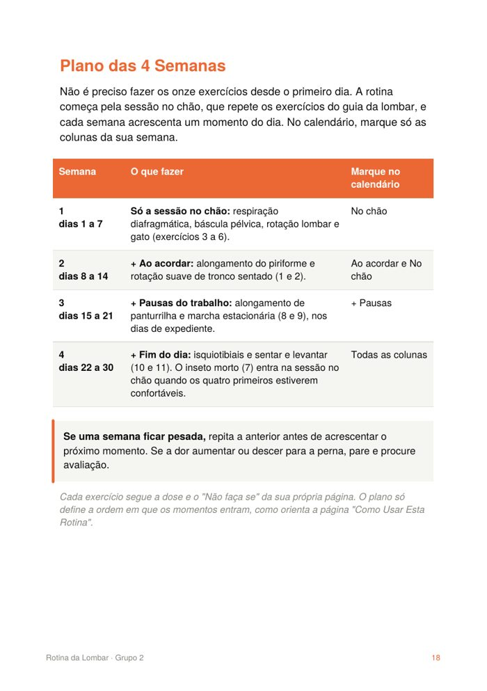

✓
Pagamento aprovado. O seu guia já está a caminho do seu e-mail. Antes de fechar esta página, uma oferta que só aparece agora.
Onze exercícios da coleção, organizados em quatro momentos do dia, com a dose e o aviso de cada documento de origem.
Rotina da Lombar · PDF
Garantia de 7 dias pela plataforma de pagamento.
Não, obrigado. Quero só o guia.Se uma semana ficar pesada, a orientação é repetir a anterior. Se a dor aumentar ou descer para a perna, parar e procurar avaliação.

De seis guias da coleção, que por sua vez seguem documentos do NHS (o sistema público de saúde do Reino Unido), da Cleveland Clinic e da Mayfield Clinic. Cada página traz a fonte e o "Não faça se" do documento original.
Material educativo: não substitui avaliação, diagnóstico ou tratamento individual.
Quero a Rotina da Lombar